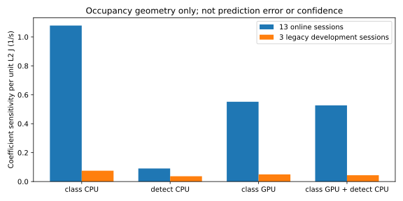

온라인13세션의 분류CPU 항이 약합니다. 하지만 기존 개발3세션의 실제 lane 기록에는 더 잘 분리되는 상태 점유가 있습니다. 전이 예측 성공이나 모형 정확도 검증은 아직 아닙니다.

기하학적 민감도이며 오차 한도·신뢰구간이 아닙니다. 기존 구간 평균전력을 순간 점유 전력으로 전용하지 않습니다.
판독·재현·다음 작업 · 온라인 실제점유 · 재사용 창 · 제외 창 · 기존 후보 미채택 결과
실제 추정 후 전이 평가 결과